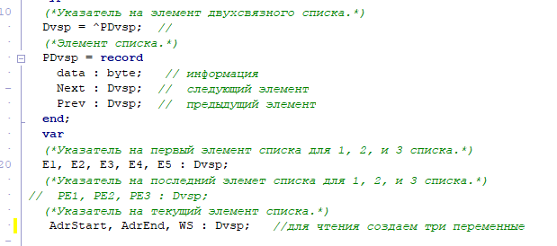
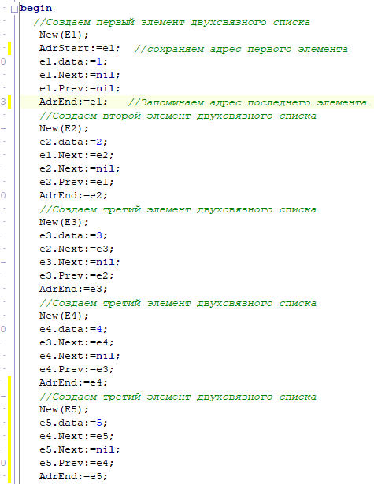
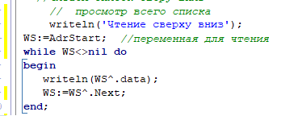
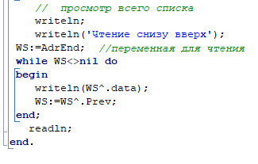

| Тема 2. Создание двухсвязного списка. | ||
| Назад | ||
|
Формулировка задачи: Создать двухсвязной список из целых чисел, положительных и отрицательных. Создаем новый тип двухсвязного списка.
 Создаем поэлементно список из пяти элементов  Читаем список сверху вниз  Читаем список снизу вверх  |
||
| Конспект подготовлен Бакулиным А. М. 2022 год. | ||